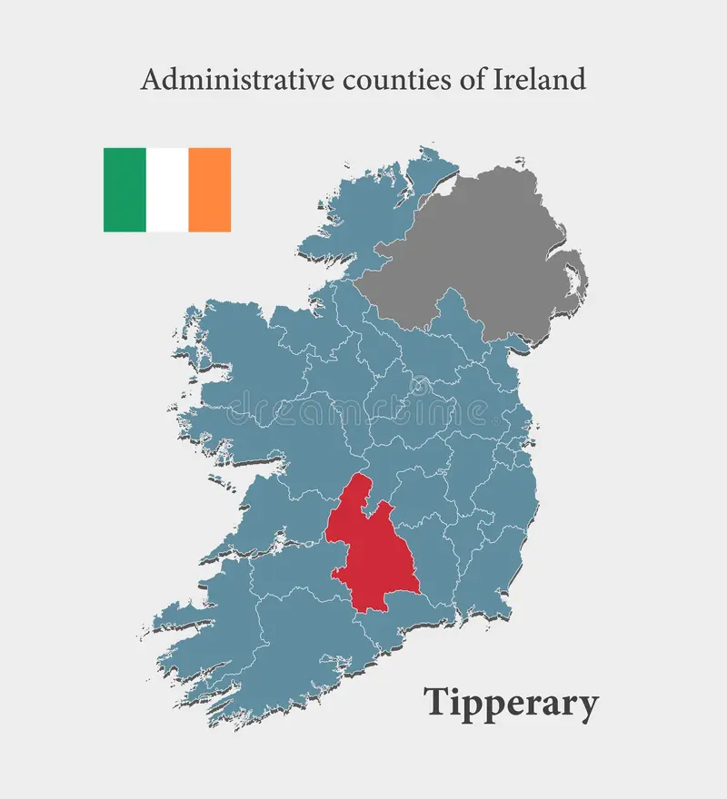

Fly Like a Bird in the Sky
A Once in a Lifetime Experience That You Should Never Repeat!!!
Book TodayLocations of where Tom and his Flying Balloon will take you.
Tom will take his balloon anywhere on the island of Ireland. Although the Great County of Tipperary has banned him because he is from Wicklow. As Tipperary has won 29 All Ireland Hurling Championships and Wicklow has 0. Tom cannot get over this fact and seems to not like Tipperary. Which is a pity because Tipperary is known for welcoming all losers into the County.
